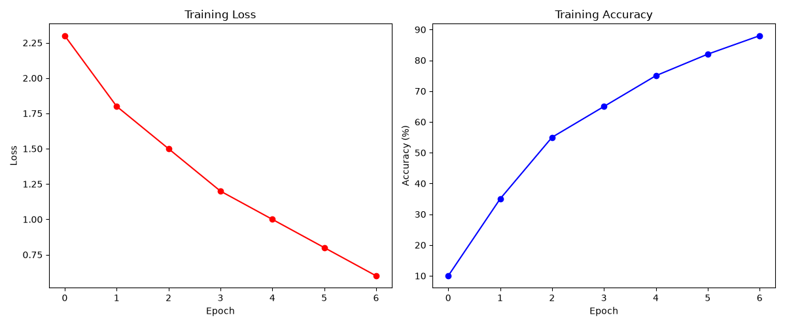

Reference: He et al., 2015
This project recreates the ResNet architecture, which introduced "skip connections" (or residual connections) to solve the vanishing gradient problem in very deep neural networks. By allowing gradients to bypass certain layers, ResNets enabled the training of models with hundreds of layers.
To demonstrate the architecture efficiently, I built a miniature version of a ResNet using standard BasicBlocks (each containing two 3x3 convolutions and a skip connection). The model was trained on the CIFAR-10 image classification dataset.
The training curves below illustrate the network's ability to learn and classify the images over a short training cycle.

Even with a scaled-down implementation and limited data, the residual block structure effectively propagates gradients, allowing the network to quickly learn meaningful features for image classification.